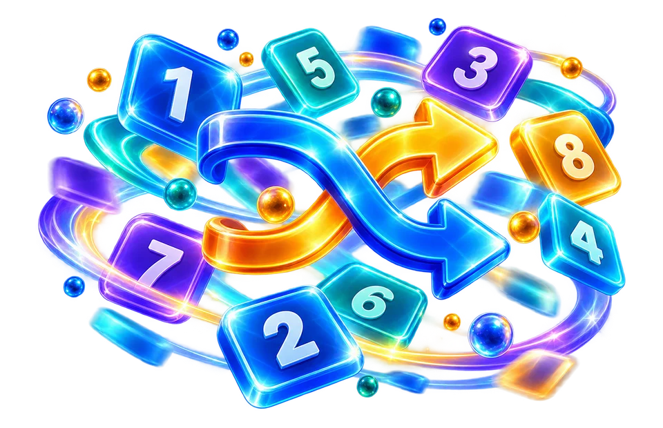

Choose the available randomization mode
Select a range from 1 to 6 and verify the result respects the selected boundaries.
Generate a secure random integer inside a range.
Always check whether the tool includes both endpoints in its range and whether it is suitable for casual selection rather than security-sensitive use.

Select a range from 1 to 6 and verify the result respects the selected boundaries.
Generate a random integer for a draw or test.
Do not use a casual random draw as a regulated lottery system.
Select a range from 1 to 6 and verify the result respects the selected boundaries.
A draw from integers 1 through 6 should never produce 0 or 7. Confirm whether both endpoints are included before using the result for a game or classroom exercise.
Use the real tool above to verify the result. The example illustrates the workflow, not a guaranteed outcome.
A draw from integers 1 through 6 should never produce 0 or 7. Confirm whether both endpoints are included before using the result for a game or classroom exercise.
Fairness depends on implementation and sampling rules. A casual browser randomizer should not be presented as a security-grade cryptographic service.
Draw a random number in a selected range. For a casual six-sided draw, select a range from 1 through 6 and check its inclusive boundaries.
Check whether the boundaries are inclusive.
Open Random mode →
Always check whether the tool includes both endpoints in its range and whether it is suitable for casual selection rather than security-sensitive use.
Always check whether the tool includes both endpoints in its range and whether it is suitable for casual selection rather than security-sensitive use.
Select a range from 1 to 6 and verify the result respects the selected boundaries.
Do not use a casual random draw as a regulated lottery system.
A draw from integers 1 through 6 should never produce 0 or 7. Confirm whether both endpoints are included before using the result for a game or classroom exercise.
A random number or picked item can be useful for a classroom activity, a raffle simulation or splitting mundane chores. But fairness also depends on the input pool and rules. If one person's name appears three times and every other name appears once, an unbiased picker will still select that person more often. Before starting a draw, remove unintended duplicates unless tickets are deliberately weighted. Write down whether repeat selections are allowed, especially when allocating winners, shifts or tasks without replacement.
For a number range from 1 through 10 inclusive, every integer in that range should be eligible. A tool that accepts minimum and maximum fields may interpret those boundaries inclusively; read the displayed rules. If the requested minimum exceeds the maximum, correct the order rather than trusting an arbitrary result. Random decimal choices and random integer choices are distinct operations, and rounding a random decimal afterward can make some integers more probable than others.
Shuffling a list means changing item order while retaining each item exactly once. For a six-member debate list, a correct shuffle still contains all six names after the operation. It should not silently drop duplicates that were meant to be separate tickets. To verify a shuffle, compare frequency counts before and after rather than only looking for an unfamiliar order. Running two shuffles can occasionally return the same ordering by chance; identical output once is not proof the randomization algorithm is broken.
Randomized results are difficult to reproduce unless the algorithm and seed are recorded. A browser picker intended for everyday choices may not expose a deterministic seed, so the same settings can produce another answer later. Do not use such a tool as a substitute for a publicly auditable lottery, a cryptographic draw or a regulated gambling system. Those contexts need additional procedures, transparency and independent controls beyond ordinary pseudorandom or browser randomness.
A winner selected by software is not evidence that the winner deserved the award, only that the entry satisfied the implemented selection rule. For test-data generation, avoid placing random values in a real database without first checking types, allowed ranges and privacy constraints. If a list picker seems biased, test with thousands of simulated selections and look for systematic issues rather than judging one or two results. Finally, keep the original list and choice rules when a result must be reviewed afterward; an isolated chosen name lacks context.
Imagine five volunteers are assigned five unique tasks. A random shuffle of the volunteer list provides an order that can be paired with the task list, ensuring each person receives one assignment. Drawing five times with replacement instead might choose one person repeatedly and omit someone else. These methods have different probability models. If a picker offers a "remove selected" option, verify that it is enabled when uniqueness matters; otherwise the tool can be behaving correctly while violating the organiser's rule.
For a classroom activity, randomising the list “Asha, Bilal, Chen, Divya” can help determine a presentation order without the teacher manually choosing one. Check whether the tool samples with or without replacement: repeated values may be valid in one kind of draw and wrong in another. A quick browser randomiser is not a certified gambling, lottery or cryptographic security system. When selecting numbers from a range, confirm whether the endpoints are inclusive and whether duplicates are allowed. Record the settings along with an important result so another person can understand what kind of random selection you performed.
Draw a random number in a selected range. For a casual six-sided draw, select a range from 1 through 6 and check its inclusive boundaries.
Not unless the tool explicitly uses and verifies an appropriate cryptographic generator.
A simple web randomizer is not a substitute for independently audited draw procedures, custody controls or jurisdiction-specific compliance.
Only if each person should have one chance. Duplicate entries increase that person's likelihood of selection.
Not necessarily. Reproducibility depends on an explicit seed and generator design, which many casual browser widgets do not expose.